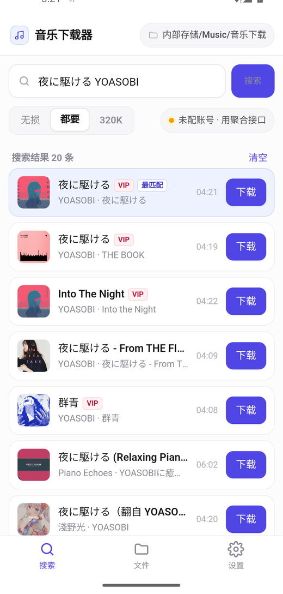
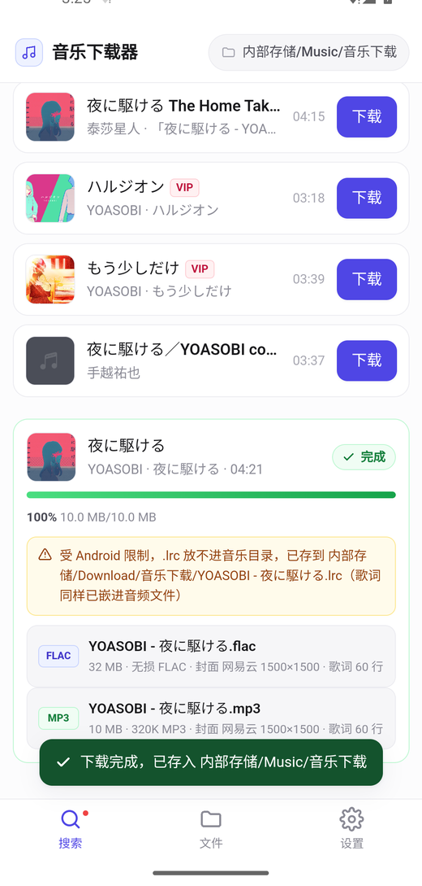
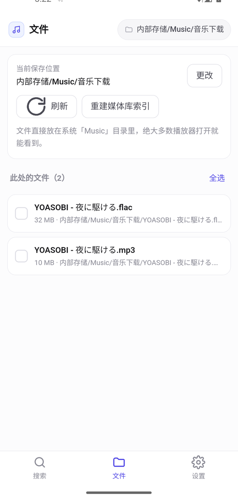
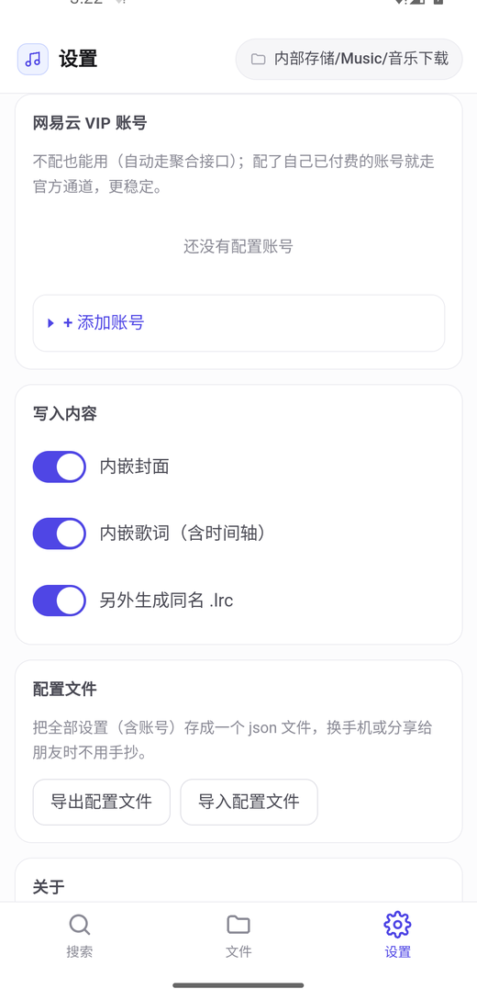

下载完，
播放器直接就能看到
手机上下歌最烦的不是下载本身，而是下载完之后找不到 —— 文件被塞进乱七八糟的私有目录，
播放器只扫 Music/ 结果什么也看不见。
这个 App 把文件直接写进系统的 Music 目录，顺手把封面、双语时间轴歌词、
专辑歌手全部写好。
手机扫码或直接点上面按钮即可下载 · 查看所有版本
首次安装系统会提示「未知来源应用」，允许一次即可



它解决什么问题
四个最常见的手机下载痛点，一次解决。
文件藏在应用私有目录里
别的 App 下载完就找不到了，只能在那个 App 里听。
Music/音乐下载/自带文件管理器难用，挪文件要点十几下
在 Download 里找到歌，选中，剪切，再翻到 Music，粘贴……
播放器扫不到别处的歌
多数播放器只扫描系统媒体库，别处下载的文件根本不出现在列表里。
没有封面、没有歌词、未知艺术家
丢进播放器就是一堆光秃秃的文件名。
该有的都有
没有花哨的功能，就是把「在手机上下歌」这件事一次做对。
直接存进 Music 目录
通过系统 MediaStore 写入，播放器立刻能扫到。不需要「所有文件访问权限」这种敏感授权。
内置文件搬运
能扫出 Download 等目录里的音频，勾选后一键移进 Music。也能自己选任意保存目录。
配置文件导入导出
全部设置（含 VIP 账号）存成一个 json 文件，换手机或分享给朋友不用手抄。
最高音质
优先无损 FLAC —— 实测拿到过 96kHz/24bit 的 Hi-Res 音源。也可选 320K MP3。
歌词带完整时间轴
日文原词 + 中文翻译按时间戳对齐合并。MP3 还会写入 SYLT 逐行同步歌词。
封面自动挑最清晰的
同时在网易云和 iTunes 里找同一张专辑，自动用分辨率最高的那张。
VIP 账号像 API Key 一样管理
Cookie 可保存多组、随时切换，每组都能一键测试是否有效、能不能真的取到无损。
体积只有 0.7 MB
不依赖任何第三方库，标签读写是自己实现的，装完几乎不占空间。
长什么样
和电脑版同一套视觉语言：白底、细灰线、单一靛蓝点缀。
封面缩略图 · VIP 标记 · 自动标出最匹配的一条
列出每个文件实际写了什么，一眼看到封面和歌词
直接展示 Music 目录内容，可多选搬运、删除

多组账号管理 · 保存位置 · 配置文件导入导出
三步用起来
-
1
下载 APK
点这里直接下载（0.7 MB）。 手机浏览器下载后点开安装，系统会提示「未知来源应用」，允许一次即可。
-
2
打开 App，搜歌下载
歌名、歌手，或者直接粘贴网易云歌曲链接都行。默认同时下无损 FLAC 和 320K MP3。
-
3
打开你的音乐播放器
文件已经在
内部存储/Music/音乐下载/里了。播放器如果没显示， 在 App 的「文件」页点一下「重建媒体库索引」。
💡 想要官方无损通道，就配一个自己的 VIP 账号
不配也能用，程序会自动走第三方接口。但配上你自己已经付费购买的网易云黑胶 Cookie，就能走官方通道 —— 更稳定、更合规，也是你的正当权益。
最省事的办法：在电脑版里配好账号， 导出配置文件，把 json 传到手机上导入，账号会一起带过来。
常见问题
装完打开，播放器还是找不到歌？
先确认文件确实在 内部存储/Music/音乐下载/（App 的「文件」页能看到就说明在）。
然后在「文件」页点一下「重建媒体库索引」，让系统重新扫描一次。
部分播放器有自己的媒体库缓存，需要在它的设置里手动「重新扫描」。
为什么有些歌没有歌词？
歌词来自网易云。刚发布不久的新歌、纯音乐、冷门曲目在网易云本身就还没有歌词， 这时 App 会明确提示「这首歌没有时间轴歌词」，音频和封面照常下载。
为什么 .lrc 文件跑到了 Download 目录？
Android 11 起，第三方应用不允许把非媒体文件写进 Music/，系统会直接拒绝。
所以旁挂的 .lrc 会自动退到 内部存储/Download/音乐下载/。
歌词本身照常可用 —— 已经嵌进音频文件的 USLT / LYRICS 标签里，任何主流播放器都能显示。 如果你希望 .lrc 和音乐放一起，可以在设置里用「自己选一个目录」，通过系统选择器授权后就没有这个限制。
提示「所有音源通道都没能取到直链」？
三级通道全挂了。常见原因是第三方聚合接口临时限流或停止服务，或者这首歌要付费购买。 点「重试」；到设置里点账号的「测试」检查 Cookie 是否还有效。
只有 128K，拿不到无损？
界面上会显示实际拿到的音质。显示「酷我 128K」说明前两级都没成功，降级到了兜底源。 配一个网易云黑胶 VIP 账号走官方通道即可。
能改保存位置吗？
可以。设置 → 保存位置 →「自己选一个…」，用系统文件夹选择器挑任意目录。
也可以只改 Music/ 下的子目录名（默认 音乐下载）。
支持 iPhone 吗？
不支持。iOS 不开放「把文件写进公共音乐目录」这类操作，也无法复现本 App 的核心体验， 而且上架需要 Mac 和苹果开发者账号。请使用 电脑版。
使用须知
- 本工具仅供个人学习与技术研究使用，请勿用于商业用途或大规模分发。
- 请只下载你有权获取的内容。通过第三方接口获取需付费的会员内容属于灰色地带， 由此产生的一切后果由使用者自行承担。
- 推荐做法：配置你自己已经付费购买的 VIP 账号走官方通道。
- 本项目不包含、不托管任何音乐文件。
- 第三方接口与本项目无关，其可用性和行为随时可能变化。